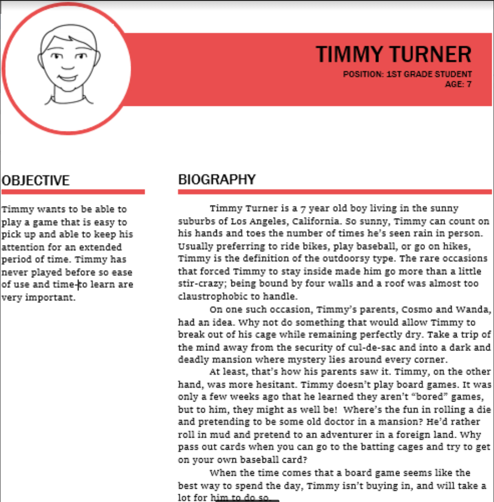
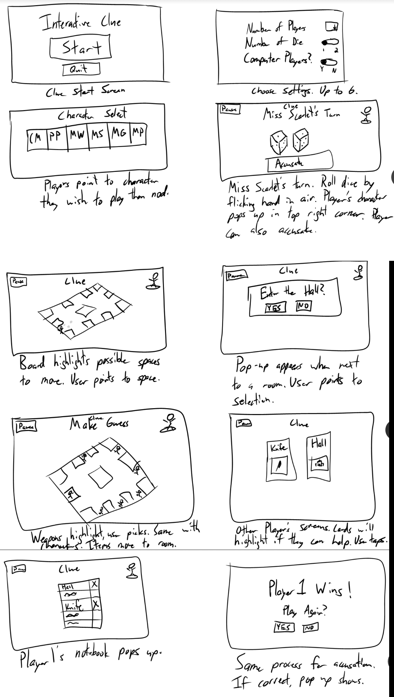
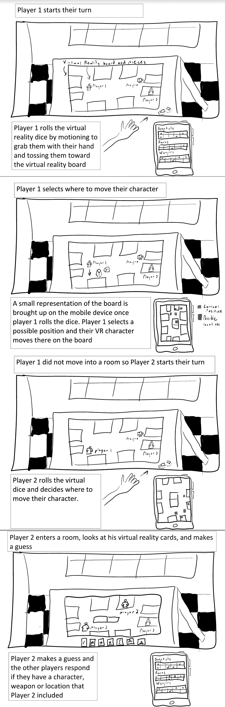
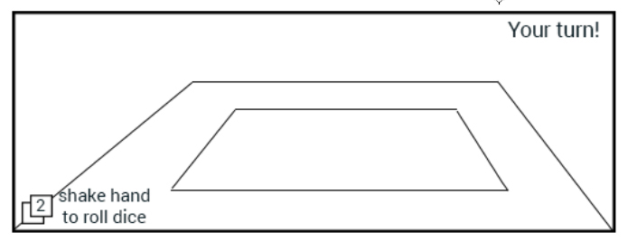
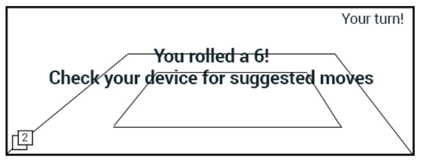
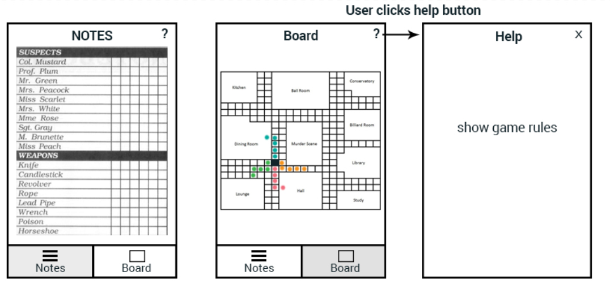
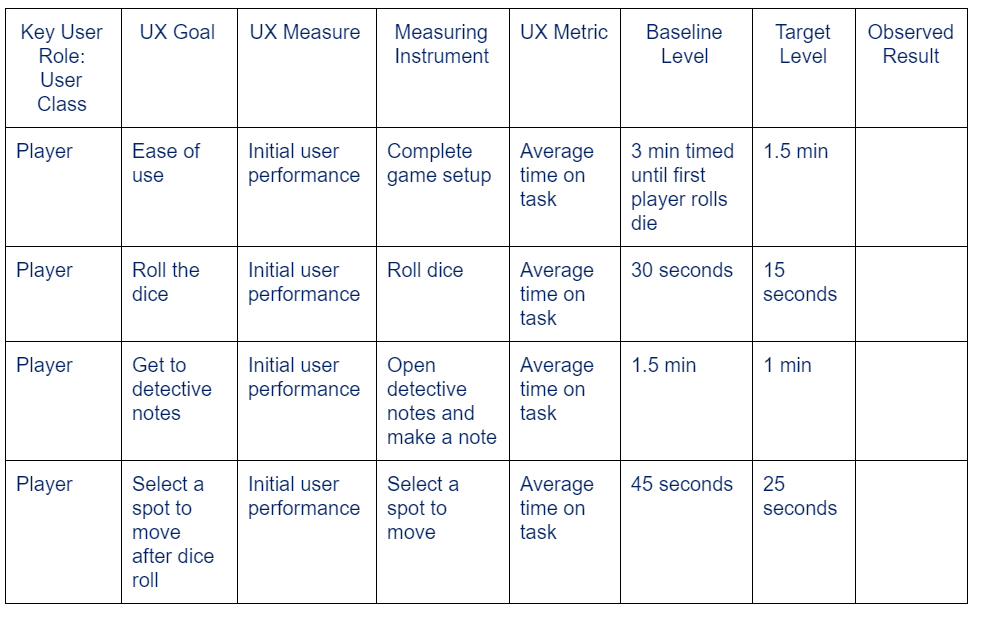

| Name | Role |
|---|---|
| Jason Barret | Project Manager |
| Aaron Newman | Design Lead |
| Toby Pancione | Research Lead |
| Monil Patel | Reporting Lead |
| Tommy Hyres | Prototyping Lead |
| Brandon Bradley | Evaluation Lead |
System Concept Statement
Clue 2.0 will be a modern day upgrade to the classic board game of clue, by providing a new immersive experience utilizing current day technologies. The game will include a new way to keep track of the players clues, cards, and pieces in a manner that brings the game to life. Compared to the current form of the game, Clue 2.0 will offer an innovative digital experience while reducing the time and setup required to play the game and remove the need for the small paper notebooks. This upgrade will alleviate all the old aches and pains of losing game pieces, writing down illegible notes, and the classic general mistrust of friends in a game built upon deceit. A focus on immersive design will emphasis the detective quality of the classic board game while offering friends and family between the age of 8 and 30 new and exciting way to play a game that they already love. The introduction of technology into this board game will bring Clue back into popularity with those who have moved on towards more digital forms of entertainment.
Project Scope
Our system concept statement outlines a number of goals of our design: provide new ways to keep track of clues, cards, and pieces. We tailored the scope of this activity to focus mainly on these 3 goals. We believe that this will keep us from reinventing the wheel and simply creating a digital version of the game Clue. We also chose to keep to this scope so as to concentrate our effort, instead of spreading wide and thin as we would have with a total recreation.
Personas
From our system concept statement, and additionally from contextual analysis, we were able to come up with what we felt was a comprehensive list of the types of people who play Clue. These types of people ranged across demographics such as age, feelings toward the game, and levels of experience and familiarity with both board games and the kinds of technology we were considering using in our design. We then broke up and wrote a narrative to each of these user classes in order to give them weight, making them feel more real and substantial. Upon reconvening, we discussed which persona we felt it was most important to design for. Keeping in mind the main goal of our project is to create a more immersive user experience, we believed that our design would have the greatest appeal to those who don’t play board games often. Classic board games get remade and remastered dozens, if not hundreds, of times in their lifetime. We feared that, no matter how good or innovative our design is, it would be overlooked as just another iteration of the same game experienced users already have five copies of, three or four of which are gathering dust in the back of some closet. Instead, we decided to design for new users who have little to no experience playing board games. With this decision we decided to use Timmy Turner as our primary persona. As a young child we felt he would be within the general target age group for the original version of the game. We want to circumvent the jadedness that comes with experience and create a design for those we expect to be more open and receptive to the change we are proposing. In order to make this persona sticky we decided to create a persona flyer. This persona flyer can be posted within our design space in order for us to keep him in mind when designing. 
Candidate Personas
Timmy Turner
Timmy Turner is a 7 year old boy living in the sunny suburbs of Los Angeles, California. So sunny, Timmy can count on his hands and toes the number of times he’s seen rain in person. Usually preferring to ride bikes, play baseball, or go on hikes, Timmy is the definition of the outdoorsy type. The rare occasions that forced Timmy to stay inside made him go more than a little stir-crazy; being bound by four walls and a roof was almost too claustrophobic to handle. On one such occasion, Timmy’s parents, Cosmo and Wanda, had an idea. Why not do something that would allow Timmy to break out of his cage while remaining perfectly dry. Take a trip of the mind away from the security of cul-de-sac and into a dark and deadly mansion where mystery lies around every corner.. At least, that’s how his parents saw it. Timmy, on the other hand, was more hesitant. Timmy doesn’t play board games. It was only a few weeks ago that he learned they aren’t “bored” games, but to him, they might as well be! Where’s the fun in rolling a die and pretending to be some old doctor in a mansion? He’d rather roll in mud and pretend to an adventurer in a foreign land. Why pass out cards when you can go to the batting cages and try to get on your own baseball card? When the time comes that a board game seems like the best way to spend the day, Timmy isn’t buying in, and will take a lot for him to do so.
Usage: Timmy wants to be able to play a game that is easy to pick up and able to keep his attention for an extended period of time. Timmy has never played before so ease of use and time-to learn are very important.
Nick Schmidt
Nick is a 17 year old boy living in Nashville, TN. Nick rides his bike to school every day and loves the outdoors. His favorite subjects are english and math. Aside from attending school, Nick is a musician. He has been playing the guitar since he was 5 years old and has also picked up the bass guitar and drums as well. He has always had a passion for country music but loves rock and roll as well. Occasionally, Nick will get a gig at a local bar or restaurant downtown. When Nick is at home with his parents and older sister, he likes to relax and watch TV or listen to music. Every now and then, Nick will hang out with his sister and either go downtown or play games. They play video games, board games, or even hide and seek with their younger cousins who live right across the street. When Nick plays games, he always has a strategy. He is a very analytical thinker and is competitive as well. He enjoys puzzles and game involving a lot of thinking.
Usage: Nick is 17 so the image of looking cool is constantly on his mind. He wants a game that doesn’t feel childish and has graphics that compare to a console system. He is also constantly on the go and wants to be able to resume his game from previous days.
Mary Bolinski
Mary Bolinski is a 10 year old fourth grader from Central New Jersey. She is has two older siblings one 12 year old brother and a 16 year old sister. Mary loves playing coloring and soccer on her local rec team. Her favorite subject is math and she is considered advanced for her age. She frequently has play dates with her friend Beth and her neighbor Charlie, both of which are in her grade. During these play dates they do anything from playing in Mary’s pool to playing board games. Mary enjoys the board games as she often wins by deploying a different strategy than her less adept friends. She doesn’t play clue every time but does enjoy playing it and has only lost against her mom and her older sister. She knows the characters by heart and her favorite to pick is Professor Plum, as he reminds her of her 3rd grade teacher Mr. Smith.
Usage: Being one of three children, Mary sometimes is left to play by herself. She would like a game that can be one player against a computer. She also has soccer quite frequently and being able to play on the go would be a huge plus for Mary.
Julie Wright
Julie Wright is a 21 year-old, senior, neuroscience major at THE Ohio State University. She is originally from Raleigh NC so moving far from home was a big change at first. However, she couldn’t be happier with her choice in college. Julie loves her school and hasn’t missed a home football game since she started attending the school. Julie is in SK, a sorority on campus and has a strong group of friends both in and out of her sorority. Julie is the philanthropy chair for her sorority and is extremely passionate about giving back to both the local and global community In her free time Julie goes to the gym, plays with her pet cat, and goes out with her friends. School is tough for Julie as she is currently enrolled 18 credits. When she has the rare weekend free, Julie can be found socializing with her favorite guys at Pi Rho or at her favorite bar, Bier Stube. She is known for her constant happy personality and her ability to manage such a busy schedule.
Usage: Julie does not have time to go out and purchase a game, nor does she really want to own a board game. So being able to just download the game is key. Julie also does not have time to learn a new game so she wants a game that is very intuitive.
Jared Barreyy
Jared Barreyy is 21 year old senior at Maryland College Park from Odenton MD. He is the middle child with a 26 year old brother and a 16 year old sister. Jared loves all board games involving strategy and wit, but especially clue. He majors in computer science and has done fairly well for himself in his major as well as in the job seeking area. He, on average, plays a game of clue about once a week with a group of friends who enjoy the game but not as much as Jared. Jared loves clue and often wins these meetings. He even becomes slightly agitated when he loses as his strategy of not only figuring out what cards are in the middle but also what cards the other players have is usually full proof. Overall Jared is a calm, calculated, but competitive individual that loves to win. That’s why his favorite character is Mr. Green as he reminds him of a crime boss who always gets his way.
Usage: Jared wants clue. He wants the game to be as true to the original as possible. He wants to be able to take his own notes, with also not worrying about ever running out of paper. Jared wants it to be immersive and feel very authentic.
Phil Ladeny
Phil Ladeny Is a 40-year-old pharmacist at a local drug store and enjoys using his tablet to read ebooks. Apart from the tablet, Phil is not the best with technology. He does however play some Nintendo Wii games with his two children, Sarah and Chris and the whole family enjoys playing different board games after school. He remembers growing up playing clue and loves to be able to share the fun with his two children. Whenever they do play clue it is usually a good time, however the game usually takes longer as the children usually take longer to figure out who did it. Chris is a hyper child who gets frustrated and usually throws the dice across the room when he is upset. Phil really wants to be able to share the fun of playing this game with children.
Usage: Phil wants a way to play this game with his children. He is frustrated with how his son will throw the dice when he is unsure who did it. Wants quick set up and clean up in order to get the kids to bed
Ideation and Sketching Process
In order to start coming up with ideas we first set up our workspace described below. Once we had a place to work freely and creatively, we started to let ideas flow. We were just coming up each with our own ideas of what we wanted to see out of our final project. What design elements would work best, what key things we needed to include, the problems with the game, and what guidelines did we need to follow. While we were all sharing ideas we each had a copy of the rules of clue available to make sure we were not forgetting any part as well as not stepping out of the boundaries of the game. We took notes of everyone's ideas, no matter how outlandish and we used this as a basis for our sketches. We made sure that this aspect was strictly ideation, and made sure not to mix critiquing into the brainstorming. With our notes of ideas in hand we broke up the product ideas into each individual game element. These are: rolling a dice, keeping track of cards, moving the pieces, the game board itself, the detective notepad, the action of taking notes, and the action of guessing case file contents. These user tasks were deemed necessary by the rules of the game and are needed in order to play. We took these game elements, listed with the different possible digital changes, and split the up among the team. Each team member was then responsible with sketching that game element in the proposed digitally enhanced versions. When sketching each member was able to be as creative as they could be. The sketches are rough ideas about how they saw that game element being incorporated into the different digital mediums. Each sketch was annotated explaining each and every aspect of the sketch. This was extremely important and helpful when looking at each others sketches most of us are artistically inept. Once we each had or game elements drawn out we came back together as a team to discuss what we came up with and how the user would be able to interact with that specific element
Physical Mockups We decided not to include physical mockups since our game is almost completely virtual and any kind of physical mockup would just be a pretend phone or VR headset. We felt that through the wireframes the user would be able to gain a good sense of the functionality of the game and didnt think that a physical prototype would be beneficial.
List of User Activites/Tasks
Using the contextual analaysis done in Phase 1 we came up with these user tasks for our new version of Clue. These are the core functionality of the orginial game so we needed to make sure that they translated properly into a digital version. We also tried to ensure that the qualities of the orginial that users liked were not unnecessarily changed.
Below are some sketches that we had made throughout the brainstorming session
- Roll a dice
- Keep track of cards
- Make an accusation
- Move a piece
- Space for a board
- Take notes (detective sheets)
- Set up game (shuffle/pass out cards, set pieces, randomly choose who, what , where. Randomly place weapons in different rooms):
- Tell accuser if he or she is wrong: After making a final accusation the user will find out if he/she has won, or if they are now out.
Workspace
Our primary workspace for this phase was the CS lounge in McBryde Hall. We repeatedly chose this space because we felt it had all the necessary tools (whiteboards, electrical outlets, etc.) to successfully meet the requirements to complete this phase. We also chose the CS lounge because we felt it was a central location for all group members and we knew the TAs for this course held their office hours there in case we needed to ask them any questions. As far as materials went, we mainly used our computers for drawing sketches and writing this report. Occasionally, we would use a whiteboard to draw a quick sketch to make sure all group members understood an idea fully. As well as using our computers to sketch, we also started out sketching on paper with pen/pencil. We then found it easier to draw on our computers because it was easier to make changes and add them to our report.


Mental Model
Through the use of Virtual Reality and a mobile application the user will be given a new fun, immersive, way to experience the game of clue. The Clue VR Edition is an application VR headset combination that will augment the game of clue to be played anywhere and anytime. Using a mobile application to create a blueprint of the board will allow the user to select where they want to move as well as take detective notes. The Clue VR Edition will use a HoloLens headset to augment reality and place a clue board and pieces anywhere for all players to play. This will create a fully immersive experience including features to change the surrounding area depending on where the user’s piece is, give turn alerts, and recognize rolling dice gestures. The conceptual design works to create a brand new way to play the game clue. The design also aims to fulfill Timmy Turner’s desire to have a game that is easy to use and something that he can really get into and feel apart of the game. While the conceptual design does not include specifics about animation or game character /player interaction, there is room to tailor the design to create a more indepth user experience.
Story Board
Created two story boards based on our the general two routes we came up with during the brainstorming. Creating a system using just VR or one that used a combination of VR and a companion device application
Only VR
VR/Companion App
Wire frames
After brainstorming and coming up with sketches and storyboards we felt that a combination of VR headset and application would be the best fit for our system.The following wireframes show how a user will interact with the VR headset and the companion app. When it becomes a players turn they must have access to the die, their notes in order to take their next turn
The VR heads up display will indicate in the top right corner that it is your turn. In the bottom left corner of the display will show a pair of dice that the user can digitally "grab" and throw onto the board in order to roll the dice.
After the user performs the gesture, the VR headset will display what he or she rolled. It also suggests looking at the companion device for where the player should move next
When the player performs the gesture for rolling a dice, the app will automatically switch from the notepad view to the board view. The board view will highlight possible moves that the player could make. The bottom navigation allows the user to easily switch between the two screens. Also located on the top right hand corner is a help icon which will display the games rules.
Target Table
Target Table Justifcation
Ease of Use - During our contextual analysis, we discovered a number of aspects of the game that gave users trouble and made the game difficult to play. In our efforts to solve these problems, if we cause the game to become even more difficult to play, then we we would have not achieved the goals of our project. The following three tasks are both essential parts of the game, and places where we feel the need to make changes. We want to make sure that each of these tasks are easier than, or, at least, just as easy as their original versions. However, we understand that our changes to include virtual reality will be something most users are totally unfamiliar with, thus the seemingly high baseline levels for these tasks. Our goal is that users will be quick to pick up tasks and interactions largely through their familiarity with board games, but we understand that this may not be the case.